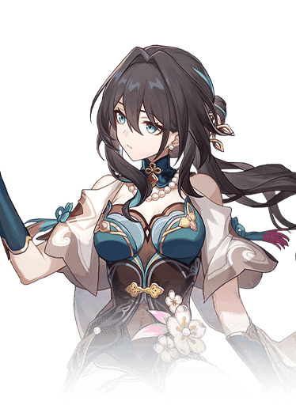

Descripcion del personaje
Ruan Mei es sin duda un personaje increíble de la Vía de la Armonía de Honkai Star Rail, se trata del primer personaje promocional de 5 estrellas introducido para esta vía, que es una de las más poderosas del juego.
Ahora en esta guía verás con más detalle todos los aumentos de estadísticas que puede proporcionar al equipo este personaje, que no está nada mal. Pero lo que la hace diferenciarse bastante del resto de personajes de la vía es que es un personaje que también potencia mucho la eficiencia de la Ruptura de Debilidad de nuestro equipo (será más fácil reducirles la barra de debilidad) y a más Efecto de Ruptura tenga, más potenciará a su equipo (gran parte de su kit gira en torno a la Ruptura de Debilidad). Basta decir que es un personaje increíble para los equipos basados en la Ruptura de Debilidad.
Además, cuenta con una peculiar mecánica en la que Ruan Mei causará Daño de Ruptura adicional cuando un compañero del equipo realice una ruptura (además de otros efectos interesante que veremos más abajo), por lo que es un personaje destinado al soporte que también causa un buen daño…. así que bueno, un 2×1 podríamos decir. También cuenta con una habilidad solo válida para el Universo Simulado que es bastante poderosa.
Introduccion al personaje
Ruan Mei es conocida por su inteligencia y habilidades científicas, especializándose en el campo de la investigación. Su trabajo contribuyó significativamente al progreso tecnológico en la galaxia. Aunque no ha tenido un papel importante en la narrativa del juego hasta ahora, se espera que en futuras expansiones de la historia o eventos, su rol se explore más.
Este tipo de personajes suelen tener una influencia profunda en el trasfondo y la construcción del mundo del juego, a pesar de no estar directamente involucrados en la acción principal.

Calidad del personaje

VIA del personaje
Armonia

Estadisticas del personaje
- PV: 1087
- ATQ: 660
- DEF: 485
- VEL: 104
- Provocacion: 100